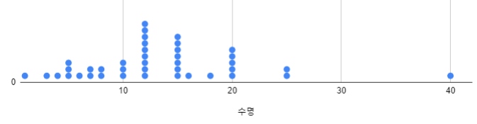
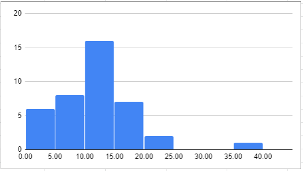
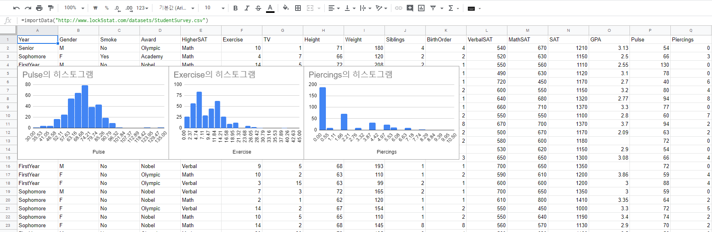
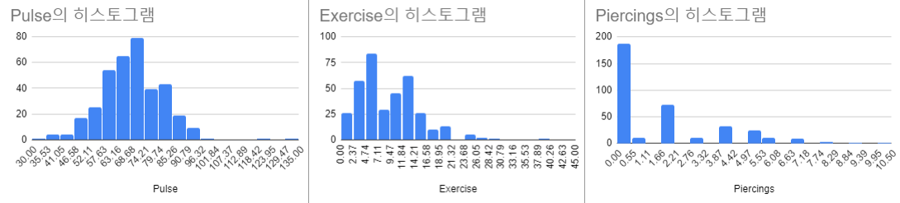
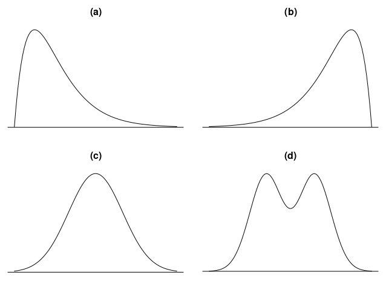
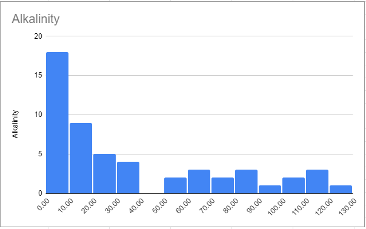
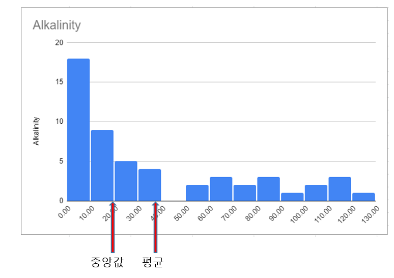
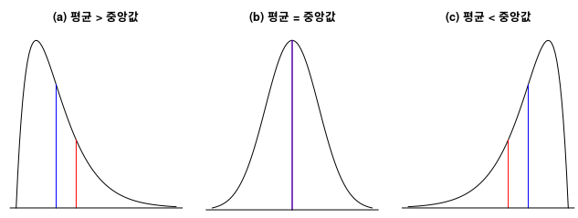
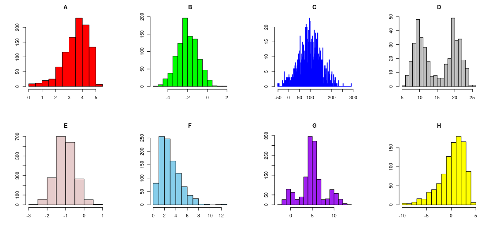

2.2 양적 변수 한 개: 모양과 중심
2.1절에서 범주형 변수를 기술하는 방법을 배웠다. 이 절에서 양적 변수를 기술하는 방법을 소개할 것이다. 양적 변수를 기술할 때 다음 세 가지 특징을 일반적으로 생각하게 된다.
데이터의 전체적인 모양(shape)은 무엇인가?
데이터의 중심(center)은 무엇인가?
데이터는 어느 정도 변동을 갖고 있는가?
이 모든 것은 데이터의 분포(distribution)가 가지는 특징이다. 세 번째인 데이터 변동에 관해서는 다음 절에서 다룰 것이다.
분포의 모양
분포의 모양을 이해하기 위하여 그래프를 사용해보자. 데이터가 많지 않을 때 보통 점도표(dot plot)를 그린다. 점도표는 수평축 눈금에 해당되는 데이터의 값에 점으로 표시한다. 중복된 데이터가 있다면 수직으로 점을 쌓아올린다. 포유 동물의 수명 데이터를 가지고 점도표를 만들어보자.
데이터 2.2. 포유 동물의 수명
포유 동물 \(40\)종의 수명이 위의 표로 주어져 있다. 점도표로 그린 것이 아래 그림이다. 수평축의 범위는 \(0\)부터 \(40\)이다. \(40\)년의 코끼리 수명을 제외하고는 \(1\)년부터 \(25\)년 사이에 있다. \(40\)이라는 수치는 다른 데이터와 비교하면 훨씬 큰 숫자인데 이런 값을 이상점(outlier)이라고 부른다.

히스토그램
데이터를 분포로 나타내는 다른 방법은 히스토그램(histogram)이다. 수명을 \(5\)년 구간으로 나누고 구간별 빈도를 구하여 표로 만든다.
| 수명(단위: year) | 빈도 |
|---|---|
| 1-5 | 6 |
| 6-10 | 8 |
| 11-15 | 16 |
| 16-20 | 7 |
| 21-25 | 2 |
| 26-30 | 0 |
| 31-35 | 0 |
| 36-40 | 1 |
| 합계 | 40 |
위 빈도표를 히스토그램으로 만든 것이 아래 그림이다. 히스토그램에서 각 막대의 높이는 빈도표에서 각 계급의 빈도이다. 히스토그램은 범주형 변수의 막대 그래프와 매우 유사한데 히스토그램의 수평축은 항상 수치 척도라는 것만 다르다. 히스토그램은 이상점 하나를 제외하면 대략 좌우 대칭이라고 할 수 있다.

확인문제 1. 양적 변수의 분포를 시각적으로 표현하는 방법으로 가장 적절한 것은?
1 \(2\)차원 표
2 점도표 또는 히스토그램
3 막대 그래프
4 파이 차트
확인문제 2. 이상점(outlier)에 대한 설명으로 올바른 것은?
1 데이터의 평균값과 정확히 일치하는 값이다.
2 분포에서 다른 값들과 비교하여 극단적으로 큰 차이를 보이는 값이다.
3 모든 데이터셋에는 반드시 이상점이 존재한다.
4 이상점은 데이터 분석에 영향을 주지 않는다.
확인문제 3. 히스토그램과 범주형 변수의 막대 그래프의 차이점으로 가장 적절한 것은?
1 히스토그램은 수평축이 수치 척도이며, 막대 그래프는 범주형 데이터의 빈도를 나타낸다.
2 히스토그램과 막대 그래프는 동일한 데이터 표현 방식이다.
3 히스토그램의 막대는 서로 겹쳐서 나타낼 수 있다.
4 막대 그래프는 연속형 데이터에 적합하다.
대칭 분포와 기운(skew) 분포
분포의 모양은 전체적인 특징이 어떠한지 기술하는 것이다. 분포는 좌우 대칭인가? 아니면 어느 한쪽 방향으로 길게 늘어져 있는가? 이상점은 있는가? 이 질문에 대한 답이 분포의 모양을 기술하는 것이다.
아래 그림을 확대하여 보려면 오른쪽 마우스를 클릭한 후에 “새 탭에서 이미지 열기”를 선택한다.
구글 스프레드시트로 히스토그램 그리기
- 구글 스프레드시트의 첫 행과 첫 열이 만나는 셀에
=importData("http://www.lock5stat.com/datasets2e/StudentSurvey.csv")을 입력한다. - 변수 중에 ‘Pulse’를 선택한 후에 ’삽입’ 메뉴에서 ’차트’를 선택한다.
- 오른쪽 ‘차트 편집기’ 설정 메뉴에서 차트 유형을 “히스토그램 차트”로 설정한다.

예제 2.9. 1장의 대학생 설문조사에서 맥박수, 운동시간, 피어싱 개수의 히스토그램을 만들고 분포의 모양에 대하여 기술하라.
풀이 (클릭하면 풀이가 보입니다)
대부분의 맥박수는 \(35\)와 \(100\) 사이에 있다. 이상점은 \(120\)과 \(130\)이다. 이상점을 제외하면 분포는 대칭으로 보인다.
운동시간은 \(0\)부터 \(30\) 시간 사이에 분포한다. \(40\)시간은 이상점으로 보인다. 분포는 좌우 대칭이 아니고 오른쪽 꼬리가 길다.
피어싱 개수는 운동시간보다 비대칭이 훨씬 심하다. 왼쪽 꼬리는 없고 오른쪽 꼬리만 길다. 피어싱이 없는 학생이 제일 많고 그 다음은 \(2\)개이다. 피어싱 \(2\)개는 무엇일까?
맥박수의 히스토그램처럼 생긴 분포를 좌우 대칭이며 종모양(bell-shaped)이라고 한다. 운동시간이나 피어싱 개수의 히스토그램처럼 꼬리의 길이가 다른 분포는 비대칭 분포이다. 분포에서 꼬리가 길게 늘어진 것을 영어에서 skew로 표현한다. 따라서 운동시간이나 피어싱 개수는 오른쪽 꼬리가 긴(skewed to the right) 분포이다.

히스토그램의 모양을 곡선으로 표현하기
히스토그램은 굴곡이 너무 많아 전체적인 모양을 파악하기 어렵다. 히스토그램을 부드러운 곡선으로 표현하여 전체적인 모양을 설명하자. 다음 \(4\)가지 분포 형태를 현실에서 가장 많이 볼 수 있다.
- (a)는 데이터가 왼쪽 부분에 몰려 있고 오른쪽 꼬리가 긴 분포이다.
- (b)는 데이터가 오른쪽 부분에 몰려 있고 왼쪽 꼬리가 긴 분포이다.
- (c)는 좌우가 대칭이며 종모양인 분포이다.
- (d)는 좌우가 대칭인 분포이지만 종모양은 아니다.

확인문제 1. 히스토그램을 분석할 때, 분포의 모양을 설명하는 요소로 적절하지 않은 것은?
1 좌우 대칭 여부
2 이상점(outlier) 여부
3 데이터의 중심과 변동
4 데이터의 개별 값
확인문제 2. 오른쪽 꼬리가 긴(skewed to the right) 분포의 특징으로 올바른 것은?
1 분포가 대칭이며 종모양이다.
2 데이터의 대부분이 오른쪽에 몰려 있다.
3 이상점이 주로 왼쪽에 위치한다.
4 데이터의 대부분이 왼쪽에 몰려 있고, 오른쪽 꼬리가 길게 늘어져 있다.
확인문제 3. 다음 중 좌우 대칭이며 종모양(bell-shaped)인 분포의 예로 가장 적절한 것은?
1 운동시간 분포
2 피어싱 개수 분포
3 시험 점수의 정규 분포
4 소득 분포
분포의 중심
그래프는 분포의 모양을 시각적으로 볼 수 있어 유용하다. 분포의 중요한 특징을 수치로 요약할 수도 있다. 분포의 중심을 요약하는 두 개의 통계량은 평균(mean)과 중앙값(median)이다.
평균
평균은 데이터를 모두 합한 값을 데이터 수로 나눈 값이다. \(n\)개의 데이터를 \(x_1, x_2, \ldots, x_n\)라고 표현하자. 평균을 계산하는 수식은 다음과 같다. 그리스 문자 \(\Sigma\)(시그마)는 모든 \(x\)를 합한다는 뜻이다.
\[\text{평균} = \frac{x_1 + x_2 + \cdots + x_n}{n} = \frac{\sum x}{n}\]
- 표본에서 평균을 나타내는 기호는 \(\bar{x}\) (x-bar 라고 읽는다) 이다.
- 모집단에서 평균을 나타내는 기호는 \(\mu\) (mu 라고 읽는다) 이다.
예제 2.10. 각각의 경우에 평균을 올바른 기호로 표현하라.
(1) A 고등학교 \(3\)학년에서 무작위로 뽑은 \(50\)명 학생의 SAT 시험의 수학 성적 평균은 \(582\)점이다.
(2) \(2010\)년 SAT 시험을 치른 약 \(160\)만 명의 수학 평균 점수는 \(516\)점이다.
풀이 (클릭하면 풀이가 보입니다)
(1) \(582\)점의 평균 점수는 표본에서 계산한 것이므로 \(\bar{x} = 582\)로 표현한다.
(2) \(516\)점의 평균 점수는 모집단에서 계산한 것이므로 \(\mu = 516\)으로 표현한다.
중앙값
중앙값은 데이터를 크기 순으로 늘어놓았을 때 중앙에 있는 값이다. 중앙에 값이 두 개이면 두 값의 평균을 계산한다. 중앙값을 나타내는 기호는 \(m\)이다.
데이터 2.3. 집중 치료실
병원의 집중 치료실에 입원한 \(200\)명의 환자에 대한 나이, 성별, 인종, 심장 박동수를 포함한 여러가지 정보가 있다.
예제 2.11. 위 데이터에서 \(20\)대 환자와 \(50\)대 환자의 \(1\)분당 심장 박동수는 각각 다음과 같다. 평균과 중앙값을 계산하라.
(1) \(20\)대 환자: \(108\), \(68\), \(80\), \(83\), \(72\)
(2) \(50\)대 환자: \(86\), \(86\), \(92\), \(100\), \(112\), \(116\), \(136\), \(140\)
풀이 (클릭하면 풀이가 보입니다)
(1) 데이터를 크기 순으로 늘어 놓아 중앙에 있는 값은 \(80\)이다. 평균은 데이터를 모두 합한 값이 \(411\)이고 데이터 개수인 \(5\)로 나누면 \(82.2\)이다.
(2) 데이터를 크기 순으로 늘어 놓으면 중앙에 있는 값은 \(100\)과 \(112\)이다. 두 개의 값의 평균인 \(106\)이 중앙값이다. 평균은 데이터를 모두 더한 값 \(868\)을 \(8\)로 나눈 값인 \(108.5\)이다.
예제 2.12. 위 예제 (1)에서 \(5\)명 환자의 심장 박동수의 평균과 중앙값은 각각
\(\bar{x} = 82.2\), \(m = 80\)이다. 심장 박동수가 제일 높은 환자의 데이터 108이 \(200\)으로 높아졌다고 생각하자. 평균과 중앙값은 얼마큼 영향을 받는가?
풀이 (클릭하면 풀이가 보입니다)
중앙값은 변하지 않는다. \(80\)이 아직 중앙에 있기 때문이다. 하지만 평균은 \(82.2\)에서 \(100.6\)으로 변한다. \(200\)이라는 극단값 하나가 평균에는 큰 영향을 끼치지만 중앙값에는 별 영향을 끼치지 못한다.
이상점이 평균과 중앙값에 미치는 효과가 다르다는 것을 알면 상황에 따라서 어느 것을 사용하는 것이 더 적절한지 판단할 수 있다.
예제 2.13. 미국의 프로 미식 축구에서 몇 명의 스타 플레이어는 엄청난 연봉을 받는다. \(2010\)년에 \(3\)명의 선수 연봉은 \(\$20,000,000\) 이상이다. \(2010\)년 선수들의 연봉 분포의 중심에 대한 두 통계량 값은 \(\$838,000\) 와 \(\$1,870,000\) 이다.
(1) 두 값 중에서 어느 것이 평균이고 어느 것이 중앙값인가? 왜 그렇게 생각했는가?
(2) 연봉 협상을 할 때 구단주에게 적절한 통계량은 무엇인가? 또한 선수에게 적절한 통계량은 무엇인가?
풀이 (클릭하면 풀이가 보입니다)
(1) 값이 매우 큰 이상점 몇 개가 평균을 중앙값보다 크게 하므로 평균은 \(\$1,870,000\) 이고 중앙값은 \(\$838,000\) 이다.
(2) 구단주는 연봉의 총합에 관심이 있는데 이는 평균에 선수 수를 곱한 값이다. 선수는 중앙값이 더 적절하다고 생각할 것이다. 선수 중의 절반은 연봉이 중앙값보다 많고 절반은 적을 것이다. 몇몇 선수의 고액 연봉은 평균에 영향을 끼치지만 다른 대부분의 선수 연봉에는 영향을 끼치지 않는다. 평균과 중앙값 모두 연봉 분포의 중심에 대한 적절한 측도이다. 연봉 협상이 종종 어려운 이유 중의 하나가 이것이다.
확인문제 1. 평균과 중앙값의 차이에 대한 설명으로 올바른 것은?
1 평균은 항상 중앙값보다 크다.
2 중앙값은 이상점(outlier)의 영향을 많이 받는다.
3 평균은 모든 데이터를 고려한 값이며, 이상점의 영향을 받을 수 있다.
4 중앙값은 표본의 크기에 따라 달라진다.
확인문제 2. 다음 중 평균이 중앙값보다 더 높은 값을 가질 가능성이 높은 분포는?
1 좌우 대칭 분포
2 오른쪽으로 꼬리가 긴(skewed to the right) 분포
3 왼쪽으로 꼬리가 긴(skewed to the left) 분포
4 평균과 중앙값은 항상 같다.
확인문제 3. 연봉 협상에서 구단주와 선수의 입장이 다른 이유로 가장 적절한 것은?
1 선수는 평균 연봉이 아닌 중앙값 연봉에 관심을 갖는다.
2 구단주는 중앙값이 아니라 최저 연봉에 관심이 있다.
3 평균과 중앙값은 항상 같으므로 논쟁의 여지가 없다.
4 선수는 연봉이 오른쪽으로 꼬리가 긴 분포를 따르는 것을 원한다.
예제 2.14. 플로리다의 \(53\)개 호수 물의 알칼리 농도(alkalinity)에 대한 데이터는 FloridaLakes 에서 얻을 수 있다.
(1) 컴퓨터를 사용하여 알칼리 농도에 대한 히스토그램을 그려라. 또 히스토그램의 모양은 어떠한지 기술하라.
(2) 평균과 중앙값을 비교한다면 어느 것이 더 클까? 왜 그렇게 생각했는가?
(3) 컴퓨터를 사용하여 알칼리 농도에 대한 평균과 중앙값을 계산하라.
(4) 히스토그램에 평균과 중앙값의 위치를 표시하라.
풀이 (클릭하면 풀이가 보입니다)
(1) 구글의 스프레드시트를 열고 첫 행과 첫 열이 만나는 셀에 다음 수식을 입력한다.
=importdata("http://www.lock5stat.com/datasets2e/FloridaLakes.csv")
이렇게 히스토그램을 그린 것이 아래에 있다. 차트 편집기에서 히스토그램의 버킷 크기를 조절한다. 알칼리 농도의 많은 값은 \(0\)부터 \(40\) 사이에 있다. 몇몇 큰 값들은 멀리 \(130\)까지 있다. 오른쪽 꼬리가 긴 분포이다.
(2) 몇몇 큰 값들이 오른쪽 꼬리에 길게 늘어져 있으므로 평균이 중앙값보다 클 것이다.
(3) c열 \(56\)번째 셀에 =average(c2:c54)를 입력한다. 평균 \(\bar{x}\)는 \(37.5\)이다. 아래 셀에 =median(c2:c54)를 입력한다. 중앙값은 \(19.6\)이다.
(4) 아래 그림을 보면 평균이 중앙값보다 오른쪽에 있는 것을 볼 수 있다. 오른쪽 꼬리가 긴 분포일 때 평균은 항상 중앙값보다 크다. 왼쪽 꼬리가 긴 분포일 때는 평균이 중앙값보다 작게 된다. 왼쪽 꼬리 쪽에 있는 작은 값들이 중앙값보다 평균을 작은 쪽으로 끌어당기기 때문이다.



위 그래프에서 빨간색 선은 평균, 파란색 선은 중앙값의 위치를 나타낸다. 오른쪽 꼬리가 길 때 평균은 중앙값보다 크게 되고 왼쪽 꼬리가 길면 평균은 중앙값보다 작게 된다. 대칭일 때 평균과 중앙값은 같다.
확인문제 1. 플로리다 호수의 알칼리 농도 데이터의 히스토그램을 보면, 평균이 중앙값보다 더 큰 이유는 무엇인가?
1 모든 데이터 값이 동일하기 때문이다.
2 데이터가 완전히 대칭적인 분포를 이루기 때문이다.
3 오른쪽 꼬리가 긴(skewed to the right) 분포이기 때문이다.
4 평균과 중앙값은 항상 같아야 한다.
확인문제 2. 다음 중 평균과 중앙값의 관계가 항상 성립하는 경우는?
1 오른쪽 꼬리가 긴 분포에서는 평균이 중앙값보다 크다.
2 왼쪽 꼬리가 긴 분포에서는 평균이 중앙값보다 크다.
3 평균과 중앙값은 항상 동일한 값을 가진다.
4 대칭 분포에서도 평균은 중앙값보다 항상 크다.
확인문제 3. 어떤 데이터의 히스토그램을 보면 왼쪽으로 꼬리가 길다. 이때 평균과 중앙값의 관계는?
1 평균이 중앙값보다 크다.
2 평균이 중앙값보다 작다.
3 평균과 중앙값은 항상 같다.
4 평균과 중앙값의 차이는 무조건 \(0\)이어야 한다.
학습 내용 정리
다음 사항을 이해하거나 해결하는 능력이 있어야 한다.
- 점도표나 히스토그램을 사용하여 분포의 모양을 기술할 수 있다.
- 컴퓨터를 사용하여 데이터에서 평균과 중앙값을 계산할 수 있다.
- 표본과 모집단에 따라 적절한 기호를 사용할 수 있다.
- 분포의 모양에 따라 평균과 중앙값의 상대적인 위치가 대략 어디인지 찾을 수 있다.
- 몇몇 이상점이나 긴 꼬리가 평균과 중앙값에 어떤 영향을 끼치는지 이해한다.
이상점
데이터 집합에서 대부분의 데이터 값과 현저하게 다른 값을 이상점(outlier)이라고 한다. 보통 이상점은 나머지 데이터보다 매우 크거나 또는 매우 작다.
분포의 특징
- 좌우 대칭인 분포
- 오른쪽 꼬리가 긴 분포
- 왼쪽 꼬리가 긴 분포
- 종 모양의 분포
평균
- \(\text{평균} = \frac{\sum x}{n}\)
- 표본 평균 기호 \(\bar{x}\)
- 모집단 평균 기호 \(\mu\)
- 평균은 이상점의 영향을 크게 받는다.
중앙값
- 데이터를 크기 순으로 늘어 놓았을 때 중앙에 위치한 값
- 중앙에 두 개의 값이 있으면 평균을 낸다.
- 중앙값은 이상점의 영향을 크게 받지 않는다.
확인문제 1. 다음 중 이상점(outlier)의 정의로 가장 적절한 것은?
1 모든 데이터 값이 동일한 경우를 의미한다.
2 데이터 집합에서 다른 값들과 비교하여 현저하게 큰 값이나 작은 값을 의미한다.
3 평균보다 작은 모든 데이터를 의미한다.
4 중앙값보다 작은 모든 데이터를 의미한다.
확인문제 2. 이상점이 포함된 데이터에서 평균과 중앙값의 관계로 올바른 것은?
1 평균과 중앙값은 항상 동일한 값을 가진다.
2 이상점이 있어도 평균과 중앙값에는 영향이 없다.
3 평균은 이상점의 영향을 크게 받지만, 중앙값은 영향을 거의 받지 않는다.
4 중앙값이 이상점의 영향을 더 크게 받는다.
확인문제 3. 다음 중 오른쪽 꼬리가 긴(skewed to the right) 분포의 특징으로 가장 적절한 것은?
1 평균과 중앙값이 항상 동일하다.
2 평균이 중앙값보다 크다.
3 평균이 중앙값보다 작다.
4 이상점이 존재할 경우 중앙값이 평균보다 커진다.
과제 2.5. 아래 그려진 히스토그램은 각각 어떤 모양인지 다음에서 고르시오.

(1) 히스토그램 A
1 왼쪽 꼬리가 긴 분포
2 오른쪽 꼬리가 긴 분포
3 대략 대칭이지만 종모양은 아닌 분포
4 대략 대칭이며 종모양인 분포
(2) 히스토그램 B
1 왼쪽 꼬리가 긴 분포
2 오른쪽 꼬리가 긴 분포
3 대략 대칭이지만 종모양은 아닌 분포
4 대략 대칭이며 종모양인 분포
(3) 히스토그램 C
1 왼쪽 꼬리가 긴 분포
2 오른쪽 꼬리가 긴 분포
3 대략 대칭이지만 종모양은 아닌 분포
4 대략 대칭이며 종모양인 분포
(4) 히스토그램 D
1 왼쪽 꼬리가 긴 분포
2 오른쪽 꼬리가 긴 분포
3 대략 대칭이지만 종모양은 아닌 분포
4 대략 대칭이며 종모양인 분포
(5) 히스토그램 E
1 왼쪽 꼬리가 긴 분포
2 오른쪽 꼬리가 긴 분포
3 대략 대칭이지만 종모양은 아닌 분포
4 대략 대칭이며 종모양인 분포
(6) 히스토그램 F
1 왼쪽 꼬리가 긴 분포
2 오른쪽 꼬리가 긴 분포
3 대략 대칭이지만 종모양은 아닌 분포
4 대략 대칭이며 종모양인 분포
(7) 히스토그램 G
1 왼쪽 꼬리가 긴 분포
2 오른쪽 꼬리가 긴 분포
3 대략 대칭이지만 종모양은 아닌 분포
4 대략 대칭이며 종모양인 분포
(8) 히스토그램 H
1 왼쪽 꼬리가 긴 분포
2 오른쪽 꼬리가 긴 분포
3 대략 대칭이지만 종모양은 아닌 분포
4 대략 대칭이며 종모양인 분포
과제 2.6. 위에 그려진 각각의 히스토그램에서 평균과 중앙값을 비교한 결과는 다음 중 무엇인가?
(1) 히스토그램 A
1 평균이 중앙값보다 크다.
2 평균이 중앙값보다 작다.
3 평균과 중앙값은 대략 비슷하다.
4 시각적으로 비교할 수 없다.
(2) 히스토그램 B
1 평균이 중앙값보다 크다.
2 평균이 중앙값보다 작다.
3 평균과 중앙값은 대략 비슷하다.
4 시각적으로 비교할 수 없다.
(3) 히스토그램 C
1 평균이 중앙값보다 크다.
2 평균이 중앙값보다 작다.
3 평균과 중앙값은 대략 비슷하다.
4 시각적으로 비교할 수 없다.
(4) 히스토그램 D
1 평균이 중앙값보다 크다.
2 평균이 중앙값보다 작다.
3 평균과 중앙값은 대략 비슷하다.
4 시각적으로 비교할 수 없다.
(5) 히스토그램 E
1 평균이 중앙값보다 크다.
2 평균이 중앙값보다 작다.
3 평균과 중앙값은 대략 비슷하다.
4 시각적으로 비교할 수 없다.
(6) 히스토그램 F
1 평균이 중앙값보다 크다.
2 평균이 중앙값보다 작다.
3 평균과 중앙값은 대략 비슷하다.
4 시각적으로 비교할 수 없다.
(7) 히스토그램 G
1 평균이 중앙값보다 크다.
2 평균이 중앙값보다 작다.
3 평균과 중앙값은 대략 비슷하다.
4 시각적으로 비교할 수 없다.
(8) 히스토그램 H
1 평균이 중앙값보다 크다.
2 평균이 중앙값보다 작다.
3 평균과 중앙값은 대략 비슷하다.
4 시각적으로 비교할 수 없다.
과제 2.7. 다음 데이터는 연구에 참여한 10명이 하루에 섭취한 섬유질을 그램으로 표시한 것이다. 반올림하여 소수점 한 자리까지 답하라.
10, 11, 11, 14, 15, 17, 21, 24, 28, 115
(1)-a 평균
정답: 26.6
(1)-b 중앙값
정답: 16
데이터 115는 명백히 이상점으로 보인다. 이 값을 제외하고 평균과 중앙값을 다시 계산하시오.
(2)-a 평균 (115 제외)
정답: 16.8
(2)-b 중앙값 (115 제외)
정답: 15
(3) 이상점의 영향을 가장 많이 받는 통계량은 다음 중 어느 것인가?
1 평균
2 중앙값